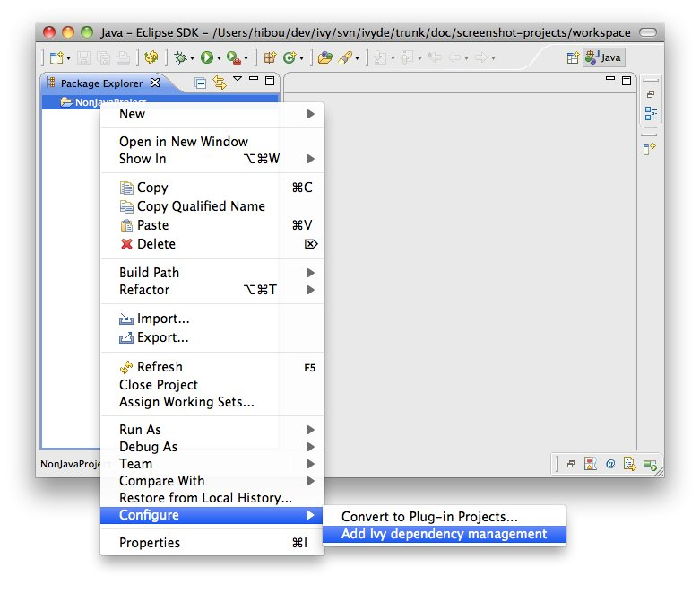
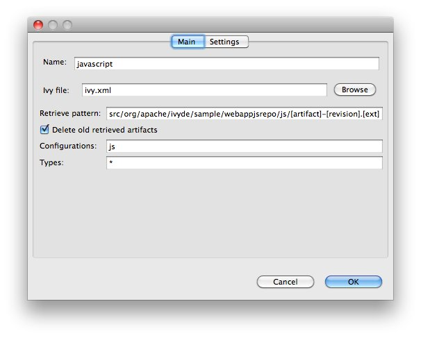
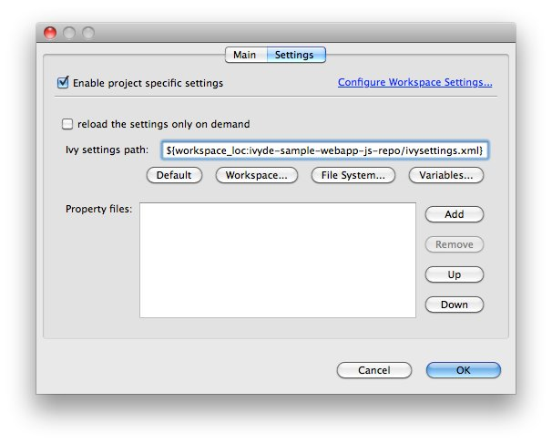
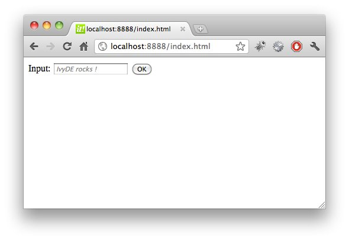

Ivy is a generic dependency manager and can manipulate jars as well as any other kind of resources. IvyDE leverages this feature by bringing dependency management to non Java Eclipse projects. In this document we will document how to work with IvyDE and non Java dependencies with a concrete exemple: we will manage the dependencies between some javascript files and bring them into a Java webapp. <h2>Import the sample project into Eclipse</h2> The full project sample can be downloaded from <a href="sample/webapp-js-repo.zip">there</a>. Unzip it somewhere and import it into Eclipse (see "Existing Projects into Workspace" in the "Import" menu). The Eclipse project is already configured with an IvyDE classpath container so we can run the Java webapp. We will just have to add the retrieve of the javascript files. <h2><a name="configure"></a>Configure the non-Java dependencies</h2> <h3><a name="configure-nature"></a>Configure the Ivy nature</h3> In order to manage dependencies with Ivy, it is required for the Eclipse project to have the "Ivy" nature. In the sample project, an Ivyde classpath container is already configured, so the Eclipse project already has the "Ivy" nature. In case your project doesn't has it, right click on the project and in the menu "Configure" select "Add Ivy dependency management". <center></center> <h3><a name="configure-retrieve"></a>Add a retrieve setup</h3> Now that the project has the Ivy nature, a new entry should have appeared in the properties of your project. This is where non Java dependencies are managed. <center><img src="images/ivy_project_properties.jpg"/></center> Now select "New..." to create a retrieve setup. <center></center> <h4>Name</h4> It gives a human readable name to the retrieve setup. This name will be used later in the context menu to actually launch a retreive of the dependencies. For the sample project, let's choose "javascripts". <h4>Ivy file</h4> The ivy file which declares the dependencies to retrieve. For the sample project, we will use the same one has the one which is used for the Java dependencies (it is not required). <h4>Retrieve pattern</h4> It defines where the dependencies should be retrieved. For the sample project we want them there: <tt>src/org/apache/ivyde/sample/webappjsrepo/js/[artifact]-[revision].[ext]</tt>. <h4>Delete old retrieved artifacts</h4> Before doing a retrieve, the location where the dependencies are dowloaded will be wiped out is this option is selected. <h4>Configurations</h4> This is a comma separated list of configuration names which will be used for the resolve (<tt>*</tt> means <i>All</i>). For the sample project, we want it to be <tt>js</tt>. <h4>Types</h4> This is a comma seperated list of type names which is be retrieved (<tt>*</tt> means <i>All</i>). For the sample project, we want them all: <tt>*</tt>. Now in the "Settings" tab, the setup entries are the same as the <a href="preferences.html#settings">global ones</a>. Click on "Enable project specific settings" to customize for your setup. <center></center> For the sample project, we want to use the ivysettings in the java project: <tt>${workspace_loc:ivyde-sample-webapp-js-repo/ivysettings.xml}</tt>. Finally, click <b>OK</b> to finish. <h3>Launch a retrieve</h3> Now that the retrieve is setup, a new entry should be available in the "Ivy" context menu. The menu entry should be "Retrieve 'xxx'" where "xxx" is the name you gave to the retrieve setup. For the sample project, it will be "Retrieve 'javascripts'". Select the entry to actually launch the retrieve. The Eclipse project get automatically refreshed with the retrieved files. For the sample project look into <tt>src/org/apache/ivyde/sample/webappjsrepo/js/jquery-1.7.1.min.js</tt>. <center><img src="images/launch_standalone_retrieve.jpg"/></center> <h3>Launch the sample webapp</h3> To see the result, we'll launch the Java webapp and look it it your browser locally. Right click the Java class <tt>org.apache.ivyde.sample.webappjsrepo.HTTPServer</tt> and select "Run As" / "Java Application". Now open the web page http://localhost:8888/index.html If working properly, the javascript files should have been properly loaded and the input field should have automatically been filled with a default value. <center></center>